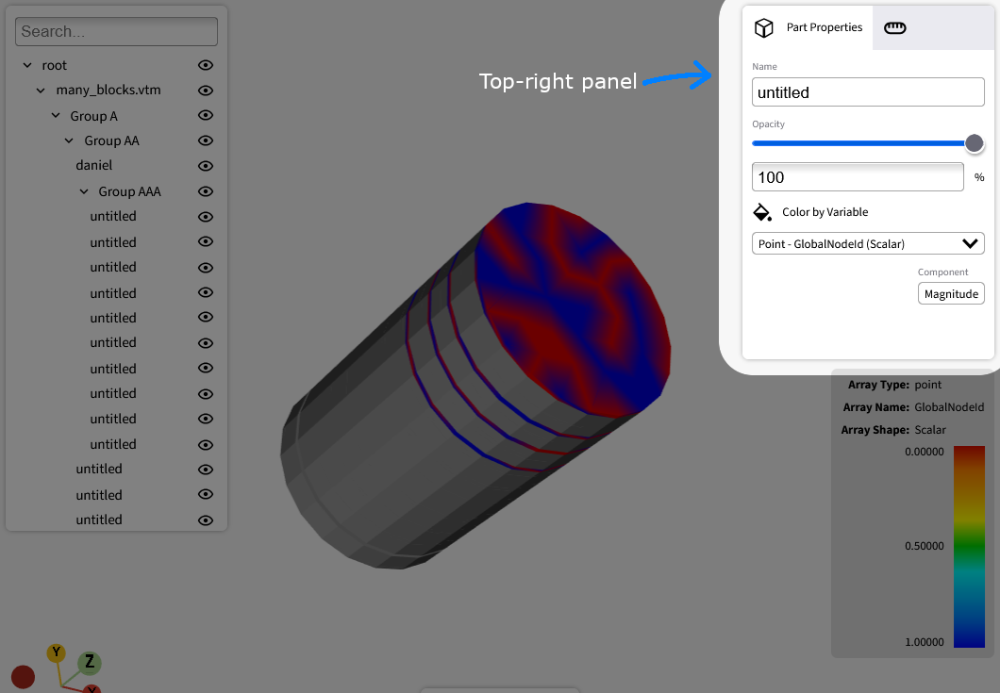
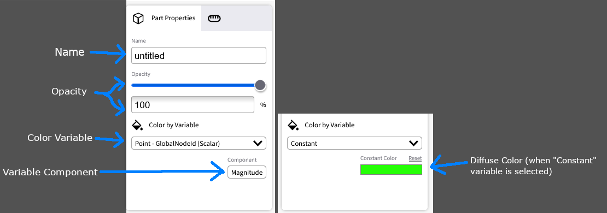
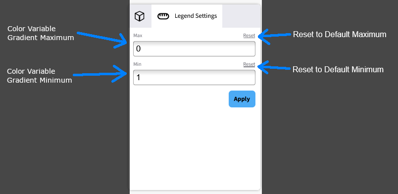

Top right panel#
Use the top-right panel to modify the currently selected parts. You can change transparency, diffuse color, and color variables (data arrays). If you select multiple parts, the panel aggregates each field value. When all selected parts share the same value, the panel shows that value. When values differ, the panel shows an indicator.
The panel has two tabs: Part properties and Legend settings.

Part properties#

Use the following fields on the Part properties tab:
Name
View the selected part name from the dataset (read-only).
Opacity
Drag the opacity slider left or right to change opacity.
Use
0%for fully transparent and100%for fully opaque.You can also enter an opacity value in the text field.
Color variable
Apply a data array (color variable) to map values to a color spectrum on the selected part.
On this page, the terms data array, color variable, and variable have the same meaning.
Open Color by variable to view available variables. The list is the union of variables across selected parts. If part A supports variable X and part B supports variable Y, the list shows X and Y. The selected variable is applied only to parts that support it.
Use scalar or multi-component arrays (for example, 2D, 3D, or 4D vectors).
By default, VISOR uses Magnitude to compute color values. In Component, choose a different component when available. For example, scalar variables only show Magnitude, while 3D vectors can show Magnitude, X, Y, and Z.
Coloring by variable is part-specific.
The legend overlay appears only when selected parts use the same variable and component.
To disable variable coloring, select Constant and apply a solid diffuse color.
Variables can be point-based or cell-based. See the following sections.
Point-based variables#
Point-based variables have the following behavior:
They store data at mesh points (vertices).
They define values per point.
During rendering, VTK interpolates values across cells formed by those points.
Use them for smooth gradients such as temperature, pressure, or velocity at node locations.
Example: If you assign temperature values to four points in a quad, VTK interpolates temperature across the surface.
Cell-based variables#
Cell-based variables have the following behavior:
They store data per cell (for example, triangles, quads, or tetrahedra).
One value applies to the full cell.
VTK does not interpolate values within the cell.
Use them for material IDs, classifications, or other discontinuous per-cell properties.
Example: If you assign a material type to each cell (for example, “metal” or “plastic”), that value applies to the full cell.
Legend settings#

Use the following fields on the Legend settings tab:
Max (color variable maximum)
Set the upper bound of the visible color spectrum for the current color variable.
After you enter a value, press the Enter key or click Apply.
Click Reset to restore the dataset’s original maximum.
This value applies globally to the color variable, not only to one part.
If the value changes, the legend overlay updates.
Min (color variable minimum)
Set the lower bound of the visible color spectrum for the current color variable.
After you enter a value, press the Enter key or click Apply.
Click Reset to restore the dataset’s original minimum.
This value applies globally to the color variable, not only to one part.
If the value changes, the legend overlay updates.